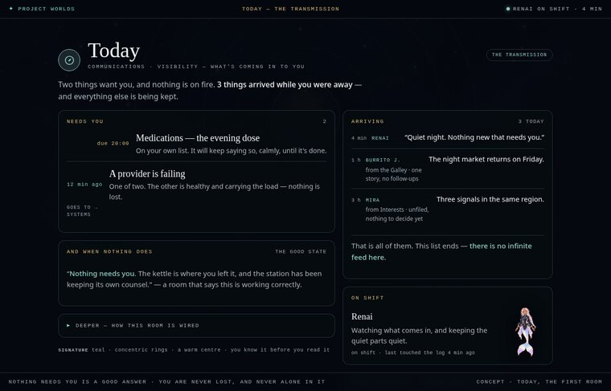
The first room · built to the new rules
Today — the Transmission
What's coming in to you: the essentials first (meds, a failing system), what arrived while you were away, the crew on shift, and the depths a step further in — plain label, invented dialect, accessible floor.
Open the room →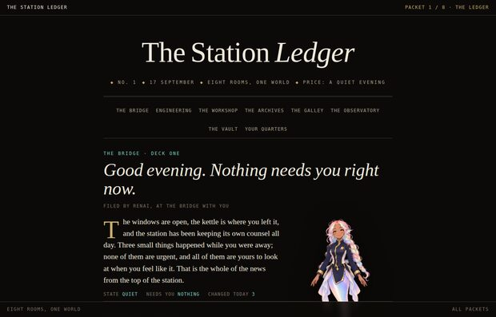
Packet 1
The Ledger
A newspaper. Today is the front page; every other deck is an article with a dateline and a rule above it.
Open packet →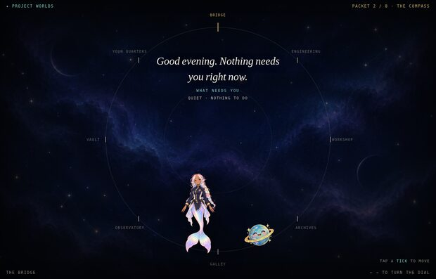
Packet 2
The Compass
One room at a time, on a dial. No scrolling, no lists — the whole screen belongs to whoever is home.
Open packet →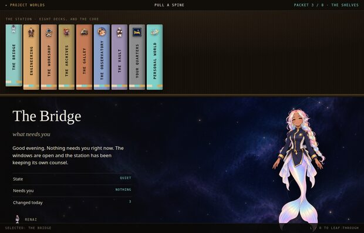
Packet 3
The Shelves
A record crate. Each deck is a spine on the shelf; pull one and the room slides out beside it.
Open packet →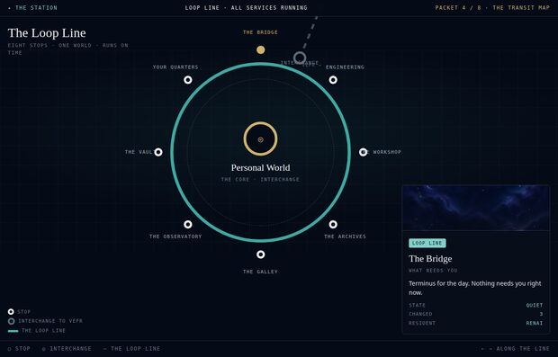
Packet 4
The Transit Map
A tube map. The eight decks are stops on a loop line; the core is the interchange.
Open packet →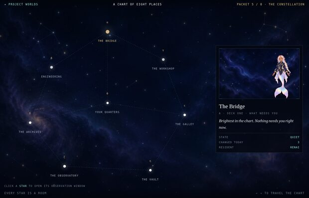
Packet 5
The Constellation
A star chart. Every star is a room; click one and an observation window opens over the sky.
Open packet →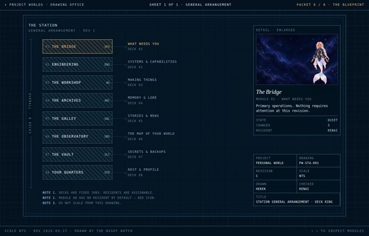
Packet 6
The Blueprint
A drafting sheet. Eight modules, leader lines, a dimension, a title block, and three notes.
Open packet →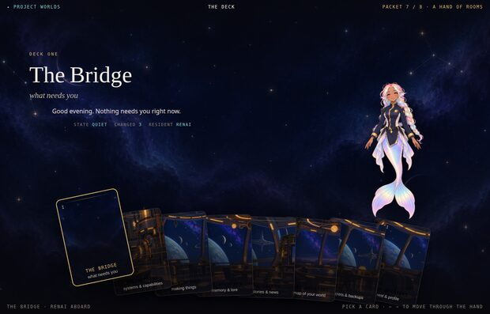
Packet 7
The Deck
A hand of cards, fanned at the bottom. Pick a card; the room fills the screen behind it.
Open packet →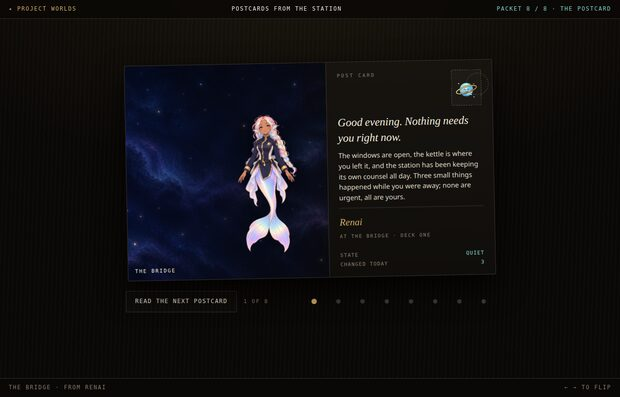
Packet 8
The Postcard
One quiet thing at a time. A photo on the left, a note from whoever is home on the right.
Open packet →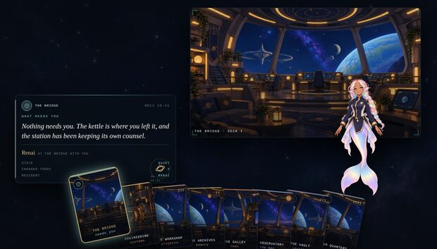
Fusion · 10
The Transmission
The deck × the postcard, modern sci-fi. A hand of cards with clear role glyphs; each card opens a transmission sent to you.
Open page →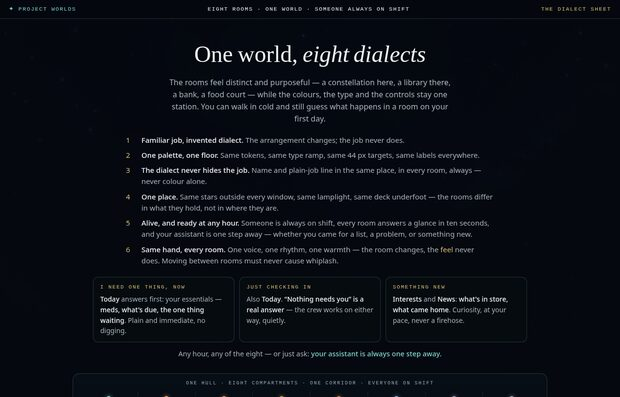
The Dialect Sheet
One world, eight dialects
Each room keeps its familiar job but speaks its own visual language — a constellation here, a blueprint there — over one palette.
Open page →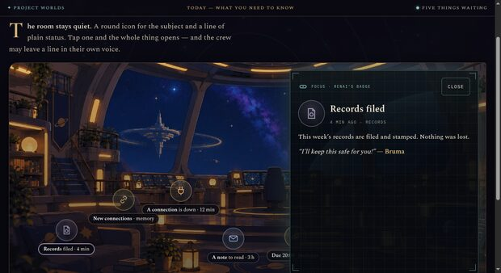
The room
Today — what you need to know
Need-first icons, unfurling cards, signed flavour lines, the assistant within reach.
Open the room →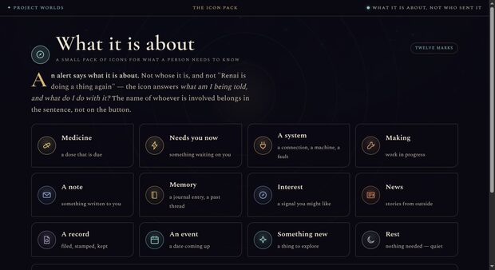
System
The icon pack
Thirteen marks for what a person needs to know — one pack, same language everywhere.
Open the pack →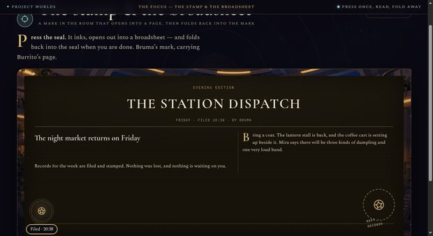
Study
The stamp & the broadsheet
A seal presses open into a page, then folds back into the seal.
Open the study →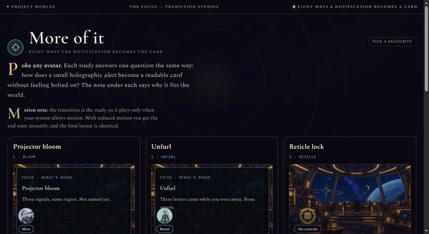
Studies
Transition studies
Eight ways the notification becomes the card — each with why it fits the world.
Open the studies →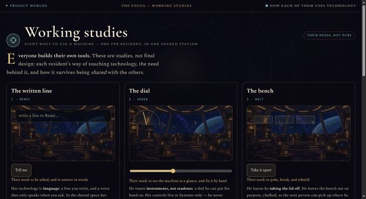
Studies
Working studies
Eight ways to use a machine — one per resident, and how it survives being shared.
Open the studies →What is the same in all eight
So the comparison is about design, not content:
- The same eight decks, each with its fixed job (Today, Systems, Projects, Journal, News, Interests, Records, Settings).
- The same residents — Renai, Hekek, Bolt, Ratatoskr, Burrito Journalism, Mira, Bruma, and the bed icon for Quarters. The crew is the default; who sits on a deck is a setting.
- The same new art set — the room backgrounds, the transparent cutouts, the bed icon, the starfields.
- The same accessibility floor — dark by default, 44 px targets, real labels on every control, keyboard arrow keys, and motion only if your system allows it.